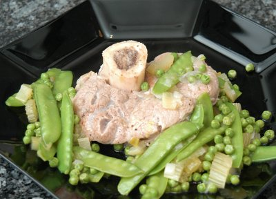

| Zutaten für 4 Personen: | |
| 1 Bund | Frühlingszwiebeln |
| 2 Zweige | Stangensellerie |
| 4 | Kalbshaxen |
| Salz, Pfeffer aus der Mühle | |
| 1 El | Mehl |
| 1/2 dl | Olivenöl |
| 1,5 dl | Weisswein |
| 2 dl | Kalbsfond oder leichte Fleischbouillon |
| 200 g | tiefgekühlte Erbsen |
| 250 g | Kefen |
| 4-6 | grüne Spargeln |
| 1 Bund | glattblättrige Petersilie |
| 1 | Knoblauchzehe |
| 1 | Zitrone |
Die Frühlingszwiebeln mitsamt schönem Grün fein hacken. die Stangenselleriezweige mitsamt zartgrünen Blättchen der Länge nach halbieren, dann in kleine Würfelchen schneiden.
Die Kalbshaxen beidseitig mit Salz und Pfeffer würzen. Das Mehl in ein Teesiebchen geben und die Haxen damit sparsam bestäuben.
In einem Schmortopf das Olivenöl erhitzen. die Kalbshaxen darin beidseitig gut anbraten. Herausnehmen.
Im Bratensatz Frühlingszwiebeln und Stangensellerie andünsten. Den Weisswein dazugiessen und leicht einkochen lassen. Dann den Fond oder die Bouillon dazugiessen. Die Haxen wieder in die Pfanne geben und zugedeckt auf kleinem Feuer etwa 1.5 Stunden leise schmoren lassen.
Die Kefen rüsten und waschen. Das hintere Drittel der Spargelstangen wegschneiden, dann die Spargeln je nach dicke der Länge nach halbieren und in gut 1cm grosse Stücke schneiden.
Etwa 15 Minuten vor Ende der Schmorzeit, wenn die Haxen bereits weich sind, Erbsen Kefen und Spargeln beifügen und mitgaren.
nicht vergessen: Beilagen zubereiten!
Am Schluss mit Salz sowie Pfeffer abschmecken.
Die Petersilie und den geschälten Knoblauch sehr fein hacken. Den gelben Schaltenteil der Zitrone mit einem Zestenmesser oder Sparschäler dünn ablösen dann ebenfalls sehr fein hacken. Mit der Petersilie und dem Knoblauch mischen. Vor dem Servieren über die Kalbshaxen Streuen.
Vorbereitungszeit: 30-40 Minuten (? mit einem Schwatz zwischendurch vermutlich....) Schmorzeit: 1.5 Stunden
Pro Portion ca. 30g Eiweiss, 22g Fett, 17g Kohlenhydrate; 423 Kalorien oder 1770 Joule
d'Chuchi, Heft 5, Mai 2000
Gelang tip top und hat wunderbar geschmeckt am 13.5.2000. Richard Eigenmann
War auch nach 30 Minuten im Dampfkochtopf sehr gut. RE 17.2.2010
@LINKBACK_TAG@ @WAKELOCK@